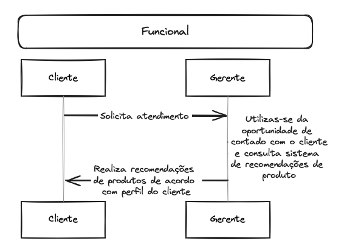
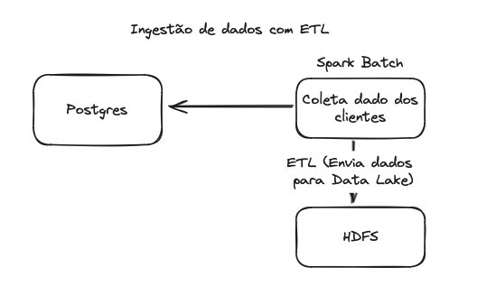
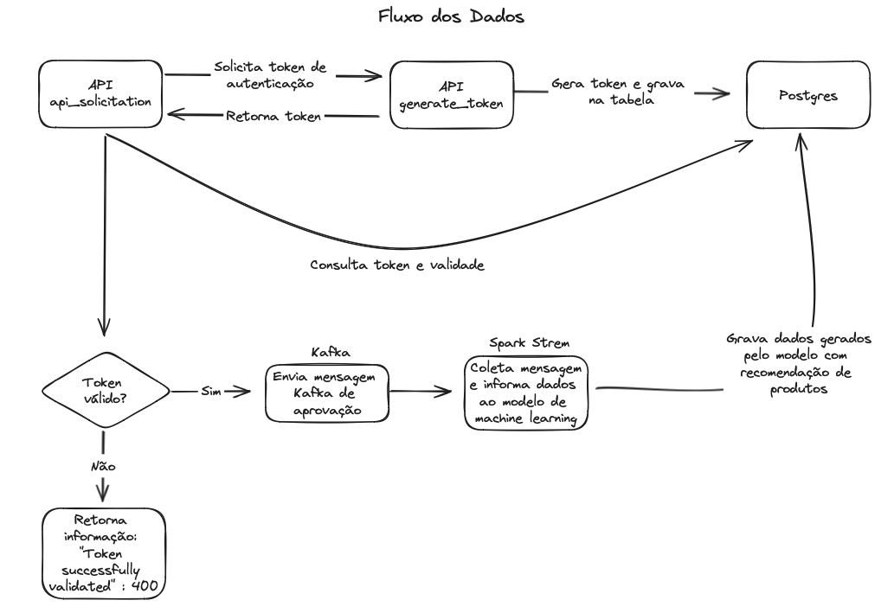

O objetivo do projeto é entregar valor ao gerente na ponta, informando dados sobre recomendações de produtos. Desta forma o gerente saberá qual produto tem relação ao perfil do cliente que ele está atendendo naquele exato momento.
A ingestão é realizada com um spark batch, que utiliza-se de tabelas do postgres, realizando todo um processo de ETL, gerando uma única tabela no HDFS, para o modelo de machine learning acessar.
O treinamento é realizado com um Spark Batch, que lê os dados em parquet gerados no HDFS, e cria um modelo de ML, gravando ele no servidor.
O fluxo se inicia em uma API python, que envia a solicitação de token, e valida sua validade. Após a validação, caso negativa encerra seu fluxo. Caso positiva, envia uma mensagem via Kafka e um Spark Stream coleta e utiliza as informações para executar um modelo de machine learning, que irá retornar a sugestão e gravar os dados em uma tabela do Postgres.
make # Para construir e subir os serviços
make down # Para derrubar os serviços
make clean # Para limpar as imagens Docker criadasCria solicitações a partir do início da jornada, após receber o dado, valida o token e posta mensagem no tópico Kafka.
New -> HTTP -> POST
URL: http://localhost:5001/solicitation_token
Body (RAW -> JSON):
{
"nome": "Yuri Fillippo Mattos",
"cpf": "41400270880"
}Cria o token, valida o CPF e grava no PostgreSQL.
New -> HTTP -> POST
URL: http://localhost:5002/gerar_token
Body (RAW -> JSON):
{
"cpf": "41400270880"
}docker exec -it kafka /bin/bash
/opt/kafka/bin/kafka-console-consumer.sh --bootstrap-server kafka:9092 --topic solicitationtopic --from-beginning